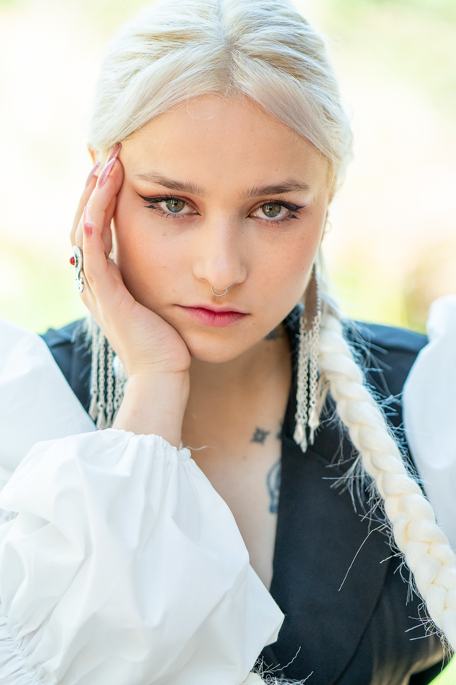

Elizabet Gubert
An artist from Kazakhstan, currently studying Digital Media Art at San José State University in California.

Artist Statement
My art brings together my culture, personal experiences, and curiosity about technology. My heritage shapes how I see the world, and I want to share it through my work. Memories, migration, language, and identity influence the stories I tell. I also want to speak honestly about problems within my culture, because loving my heritage means caring about what needs to change.
At the same time, not every project begins with identity or a personal story. Sometimes I start with an unexpected idea, a new technique, or a question: “What happens if I try this?” Experimenting helps me discover new interests and ways to express myself.
I work with video, digital images, 3D modeling, and sometimes sculpture. I am drawn to technical art because I enjoy both imagining something and figuring out how to make it work. I want to explore how physical materials, virtual environments, and interactive experiences can come together.
I want my work to entertain people, make them curious, and give them something to think about. I like leaving room for viewers to form their own interpretations. I am still developing my visual language, and what keeps me moving forward is the chance to learn, take risks, and surprise myself.